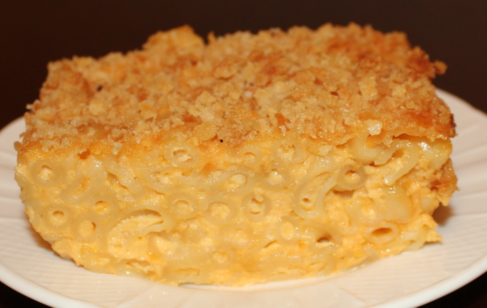

Home
Grandma's Famous Mac And Cheese Recipe

Description
This is my family loved, homemade Mac and Cheese recipe made by my Grandma!
Ingredients
- About a full bag's worth of par-boiled elbow noodles
- 1L & 1/4 cup of 2% milk
- 2 tbsp of cornstartch
- 6 tbsp / half a bottle of Kraft cheese whizz
- 2 blocks shredded of cracker barrel cheese
- 1 tbsp butter as you'd like
- 1/2 cup of half and half cream
Steps
- Preheat your oven to 350-375 degrees farenheight
- Add your milk (leave some for the next step) into a pot with about 5 handfuls of cheese and your cheese whizz
- Mix a little bit of your milk with the cornstartch (cold)
- Add this slurry into the pot
- Then put the milk on a medium heat, you do not want this to boil
- Then as the pot warms keep mixing until most of the cheese melts and as your doing this add about 5 more handfuls of cheese (don't worry about chunks)
- Then pour about a cup or so of half and half cream into the mixture
- Then just mix over the heat for a minute
- Once the cheese melts add your butter
- Now the sauce is done
- Prepare a buttered alluminum pan, and add your noodles to it
- Pour the sauce on top
- And add the rest of your shredded cheese on top to create a crust
- Let it cook in the oven for 50 minutes to an hour or until your crust is crispy, if you want the crust super crispy, cook it covered